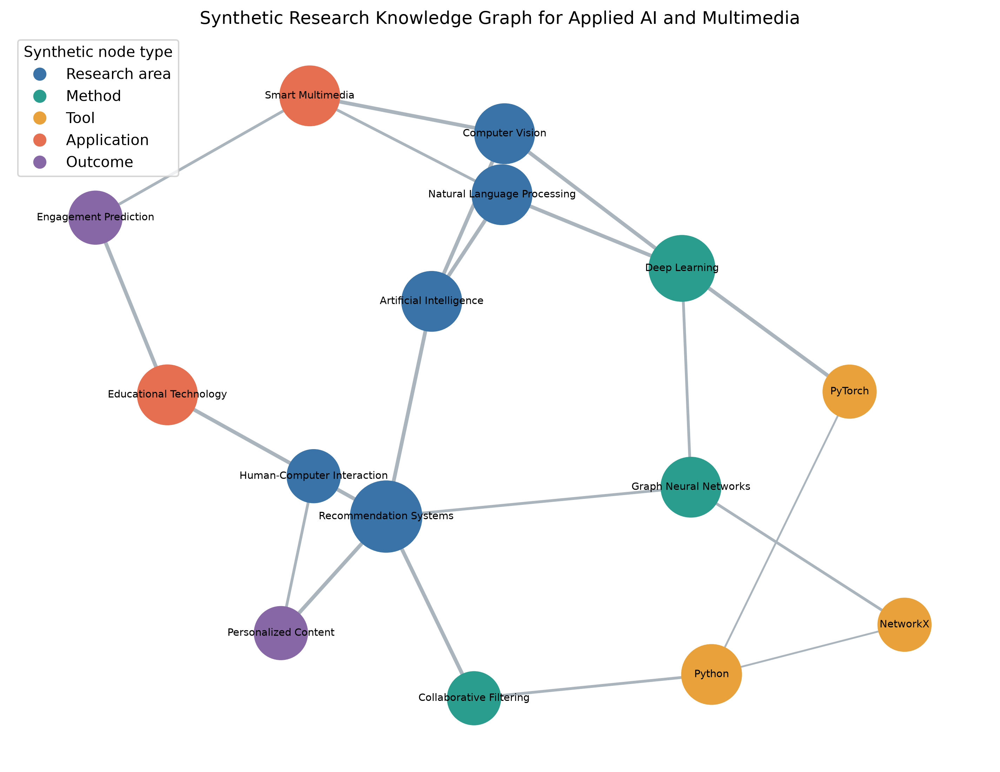

PY
2 KB
Python source
Standalone, reusable implementation generated from the canonical cells.
Download file →Exercise 07 · Complete study
Stored synthetic typed-node and semantic-edge CSV files
The exercise reuses the required teaching definition and saves every calculated
artifact through the deterministic Python pipeline. Relevant data:
data/generated/domain_graph_nodes.csv.
Use the Python file for reusable source, the clean notebook for independent execution, the executed notebook for verified outputs, and the HTML edition for browser review. Every format contains the same exercise logic and evidence.
Standalone, reusable implementation generated from the canonical cells.
Download file →Editable notebook with code cells ready for a fresh-kernel execution.
Download file →The same notebook with verified outputs stored for assessment and review.
Download file →Standalone HTML export of the executed notebook; no Jupyter installation required.
Open in browser →Standalone interactive graph with zoom, pan, hover, and responsive sizing.
Open in browser →Format integrity: the clean IPYNB has no stored outputs; the executed IPYNB and HTML were produced by a clean kernel with errors disallowed.
03 · EvidenceRecommendation Systems has the highest inverse-strength weighted betweenness (0.5385).

The implementation below is taken from the canonical project modules. Open any module to inspect the complete surrounding code and imports.
def load_domain_graph(
output_dir: Path = DATA_GENERATED,
) -> tuple[nx.Graph, pd.DataFrame, pd.DataFrame]:
"""Build the synthetic research knowledge graph from its CSV tables."""
nodes = pd.read_csv(output_dir / "domain_graph_nodes.csv")
edges = pd.read_csv(output_dir / "domain_graph_edges.csv")
graph = nx.Graph(name="Applied AI and Multimedia Research Knowledge Graph")
for record in nodes.to_dict(orient="records"):
graph.add_node(
record["node_id"],
label=record["label"],
node_type=record["node_type"],
)
for record in edges.to_dict(orient="records"):
graph.add_edge(
record["source"],
record["target"],
relationship=record["relationship"],
weight=int(record["strength"]),
)
return graph, nodes, edges
def domain_metrics() -> tuple[pd.DataFrame, dict[str, Any]]:
"""Calculate centrality metrics for the synthetic research graph."""
graph, nodes, _ = load_domain_graph()
for source, target, data in graph.edges(data=True):
graph[source][target]["distance"] = 1 / data["weight"]
degree = nx.degree_centrality(graph)
betweenness = nx.betweenness_centrality(graph, weight="distance")
closeness = nx.closeness_centrality(graph)
pagerank = nx.pagerank(graph, weight="weight")
records = []
labels = nodes.set_index("node_id")["label"].to_dict()
types = nodes.set_index("node_id")["node_type"].to_dict()
for node in graph:
records.append(
{
"node_id": node,
"label": labels[node],
"node_type": types[node],
"degree": graph.degree(node),
"degree_centrality": degree[node],
"betweenness_centrality": betweenness[node],
"closeness_centrality": closeness[node],
"pagerank": pagerank[node],
}
)
metrics = pd.DataFrame(records).sort_values(
"betweenness_centrality", ascending=False
)
metrics.to_csv(TABLES / "domain_graph_metrics.csv", index=False)
top = metrics.iloc[0]
return metrics, {
"nodes": graph.number_of_nodes(),
"edges": graph.number_of_edges(),
"density": nx.density(graph),
"top_betweenness_node": top["label"],
"top_betweenness_value": float(top["betweenness_centrality"]),
"connected": bool(nx.is_connected(graph)),
"average_degree": float(
sum(dict(graph.degree()).values()) / graph.number_of_nodes()
),
"top_centrality_records": [
{
"label": row["label"],
"node_type": row["node_type"],
"degree": int(row["degree"]),
"degree_centrality": float(row["degree_centrality"]),
"betweenness_centrality": float(row["betweenness_centrality"]),
"closeness_centrality": float(row["closeness_centrality"]),
"pagerank": float(row["pagerank"]),
}
for _, row in metrics.head(5).iterrows()
],
"interpretation": (
f"{top['label']} is the strongest bridge by inverse-strength weighted "
"betweenness, linking research themes, technical methods, and application "
"outcomes. "
"The graph is synthetic and demonstrates structural interpretation, "
"not empirical evidence about a real research community."
),
}
Recommendation Systems is the strongest bridge by inverse-strength weighted betweenness, linking research themes, technical methods, and application outcomes. The graph is synthetic and demonstrates structural interpretation, not empirical evidence about a real research community.
Limitation: The knowledge graph is illustrative and was not extracted from publications.